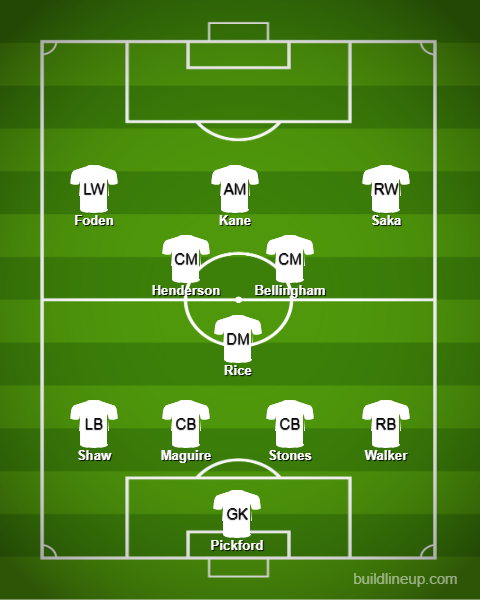

The World Cup Awards
Young player of the tournament - Enzo Fernandez (Argentina & Benfica)

Ralf found a star and United missed him and I will stay salty about it 😂 because he was suggested all the way when he was in River Plate and now Benfica have snagged him and I think he will grow more and more like he did this tournament and he will go for a massive fee in the near future for sure. He was amazing in both the CDM and CM role. It all started when I was watching his goal against Mexico on a train actually 😂. No regrets whatsoever about that. Keep growing and he’ll be the present and future of the Argentina midfield.
Golden Glove: Best Goalkeeper of the Tournament - Emiliano Martinez (Argentina & Aston Villa)
The weird picture aside 🤣, it is crazy to think that it all began when Maupay(A French player) injured Leno from Arsenal and up stepped Emi Martinez in his stead and since that the rest is history. He was funnily enough in the stands supporting Argentina back in 2018(He saw Caballero playing and decided to intervene 🤣). And now, he is Argentina’s starting keeper by a landslide and he backs it up with his performances as well. In penalties, he loves getting inside people’s heads to put them off. Out of Mbappe’s 3 penalties(1 in the shootout), he was close to saving 2 of them but they were really well-struck. I think his standout moment was that save one on one from Kolo Muani
If that had gone there would have been no hope for Argentina but Martinez stood firm and also made a save in the shootout to get the honors for Argentina.
Golden Boot for top scorer in the World Cup - Kylian Mbappe (France & PSG)
What a tournament from him yet again. In 2 consecutive World Cups, he has performed amazingly and almost got France over the line if not for that great Martinez save. His amazing mentality to keep a level head was absolutely amazing because I don’t think France is getting back into it twice without him. He was a monster and he will be one of the greatest in the near future because I don’t think there is no one else who has this level of quality for both club and country. An amazing hat trick and a great tournament all around.
He will indeed 👏
Golden Ball for best player of the World Cup - Lionel Messi (Argentina & PSG)
Who bloody else for the best player of the tournament 😤. Honestly, if roles were reversed Mbappe is taking both the Golden Boot and Golden Ball but it didn’t happen and now to focus on Messi. A great start to his second season at his club PSG after a rather underwhelming first season since leaving Barca he was clicking so well with both Neymar and Mbappe and he brought that exact level of form into this tournament. He had no goals scored in the knockouts till then and now he scored 4. All the way from the Round of 16 to the final becoming the first to ever do it. Still breaking records no matter the age. Dribbling past a 20-year-old Gvardiol who was undoubtedly one of the defenders of the tournament like it was nothing. There is so much to his game and he has become the ultimate playmaker characterized perfectly by that incisive pass to Molina against the Netherlands but he has got the goals in him at times as well with great finishes against Mexico and Australia among the bunch of penalties he expertly put away given the weird nature of the ball till it was changed for the semi-finals.
Fair play Award for least cards - England

I don’t have much for this in all honesty. Maybe they can make it a double if this award exists in the Euros in 2024 because Southgate is staying 🙄.